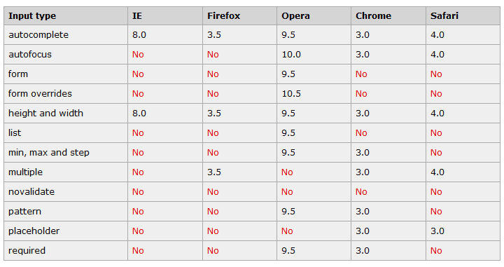
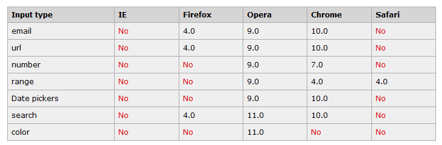

浏览器支持类型

Input 类型 - email
email 类型用于应该包含 e-mail 地址的输入域。在提交表单时，会自动验证 email 域的值。
提示：iPhone 中的 Safari 浏览器支持 email 输入类型，并通过改变触摸屏键盘来配合它（添加 @ 和 .com 选项）。
E-mail:
Input 类型 - url
url 类型用于应该包含 URL 地址的输入域。在提交表单时，会自动验证 url 域的值。
提示：iPhone 中的 Safari 浏览器支持 url 输入类型，并通过改变触摸屏键盘来配合它（添加 .com 选项）。
Homepage:
Input 类型 - number
number 类型用于应该包含数值的输入域。您还能够设定对所接受的数字的限定：
提示：iPhone 中的 Safari 浏览器支持 number 输入类型，并通过改变触摸屏键盘来配合它（显示数字）。
step规定合法的数字间隔（如果 step="3"，min="0",则合法的数是 -3,0,3,6 等）
Points:
Input 类型 - range
range 类型用于应该包含一定范围内数字值的输入域。range 类型显示为滑动条。您还能够设定对所接受的数字的限定：
Points:
Input 类型 - Date Pickers（日期选择器）
浏览器支持情况如下，暂时fox不支持Date Pickers（日期选择器）

Date:
Month:
Week:
Time:
Date and time:
Date and time:
Input 类型 - search
search 类型用于搜索域，比如站点搜索或 Google 搜索。search 域显示为常规的文本域。